Practice creating and using studies
Use these hands-on tutorials to learn how to perform the various tasks involved in setting up a Solid Edge Simulation finite element analysis, as well as to learn how to interpret and manipulate the results.
-
The models for these tutorials are delivered in the \Program Files\Siemens\Solid Edge 2023\Training\Simulation folder.
-
The types of studies that you can create in Solid Edge Simulation are based on your license type. To be able to create all of the different studies listed in the tutorials below requires a Solid Edge Simulation—Advanced license.
|
Tutorial |
Subject |
|---|---|
|
Tutorial—Introduction to simulation 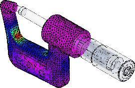 |
This tutorial provides a start-to-finish look at how you use Solid Edge Simulation to analyze typical loading of different configurations of the micrometer model, view the results, and generate a report. |
|
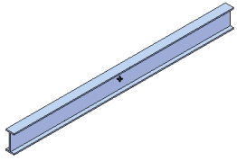 |
You can use linear static analysis and these study parameters to simulate forces on an I-beam:
|
|
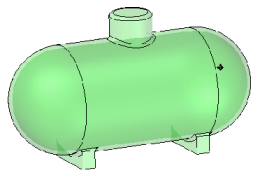 |
You can use linear static analysis and these study parameters to simulate stresses inside a pressure tank:
|
|
Simulate centrifugal forces on a mower blade 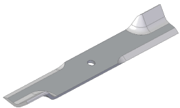 |
Simulate centrifugal forces on a mower blade using these study parameters:
|
|
Simulate torque on a mower hub 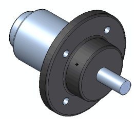 |
Simulate torque stresses on the shaft of a mower hub using these study parameters:
|
|
Simulate stress on a sheet metal part 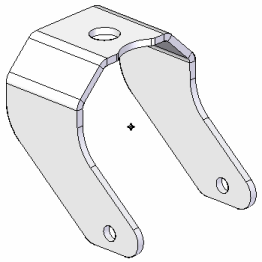 |
To simulate stress on a sheet metal part, you define a mid-surface as the study geometry and mesh it with a 2D surface mesh. The study parameters used in this tutorial are:
|
|
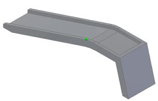 |
Simulate displacement of a ramp that is constrained from sliding along the floor as the wheel of a car is driven onto it. The study parameters used in this tutorial are:
|
|
Compare displacement load results for different materials 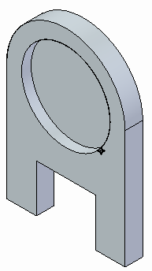 |
Examine the results of linear stress analysis using two different materials. You will create two studies in the same document to do this. The study parameters used in this tutorial are:
|
|
Simulate wind velocity on a sign post 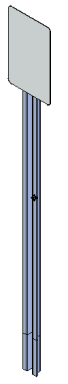 |
Simulate stresses due to wind velocity on a sign post. This assembly consists of a sheet metal part and a solid part.
|
|
Use a variety of tools in the Simulation Results environment to review your FEA study results. 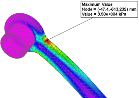 |
Tutorials: |
|
Simulate stresses on a basketball hoop 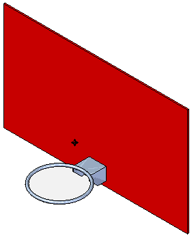 |
In this assembly, you explore how a force applied to a basketball hoop or rim will affect the hoop itself.
|
|
Simulate stresses on a valve handle 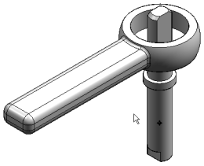 |
In this assembly, you learn how you can use a cylindrical constraint and a force load to simulate linear static stresses on a handle.
|
|
Apply edge connectors to an assembly 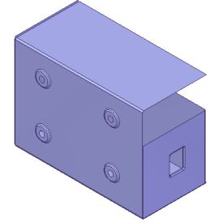 |
Learn how to use the Simulation tab→Connectors group→Edge command |
|
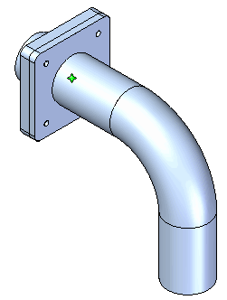 |
Learn how to use the Simulation tab→Connectors group→Bolt command to simulate bolt connectors in an assembly. You also review the stresses associated with the connectors using the Bolt Connector Forces table in the Simulation Results environment. |
|
Analyze a structural frame model created in the Frame environment |
In a structural frame model, beam curves are created from the design body, and the beam curves are meshed into discrete beam elements and beam element nodes. The finite element analysis process simulates loading conditions on a frame model and determines its response at various locations on the beam cross section. Tutorials:
|
|
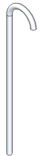 |
You can use buckling analysis to determine the load value at which a slender or thin structure becomes unstable or breaks. The study parameters used in this tutorial are:
|
|
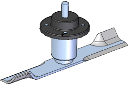 |
You can use modal analysis to find the natural frequencies at which a part or assembly vibrates when a constraint is applied to it. The study parameters used in this tutorial are:
|
|
In Solid Edge Simulation, there are two types of heat transfer studies: steady state and transient. Use a steady state study to determine the final state and maximum temperature of the model, and use a transient heat study to see the temperature changes during the operation of the model or at a critical or specific time. Define and review a transient heat study 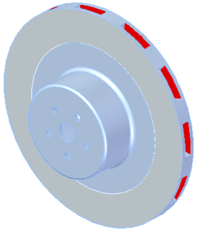 |
This brake rotor part example (model not provided) shows how you can use transient heat transfer analysis. The objective is to identify the maximum temperature of the break rotor over a specific period of time, and to verify that thermal stresses do not exceed operational maximum temperature for the part. The study parameters used in this example are:
|
|
Steady state thermal stress analysis 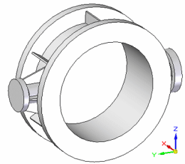 |
You can use thermal stress analysis, which combines steady state heat transfer and linear static analysis, to calculate stresses, strains, and displacements due to thermal effects on a water pipe that is designed to carry hot and cold water. The study parameters used in this tutorial are:
|
|
Learn techniques to optimize your model for finite element analysis. |
Tutorials: Simplify a bicycle stem for simulation 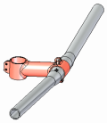 Simplify a model and apply a load using X,Y,Z components 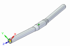 Simplify a sheet metal assembly 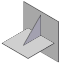 |
|
Work with multiple studies and reuse simulation objects. |
Tutorials: 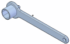 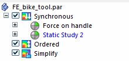 Copy and paste simulation items across part files 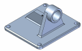 |
|
Use Solid Edge Simulation files in Femap. You must have a separate installation and license for Femap. |
Try these activities in the following order: |
 to apply rigid connectors between edges in a sheet metal assembly.
to apply rigid connectors between edges in a sheet metal assembly.  .
.Defining loads
You also can choose a brief activity that shows how to define different types of loads:
Defining constraints
You also can choose a brief activity that shows how to define different types of constraints:
Defining mesh type and sizing
You also can choose a brief activity that shows how to define different types of meshes: